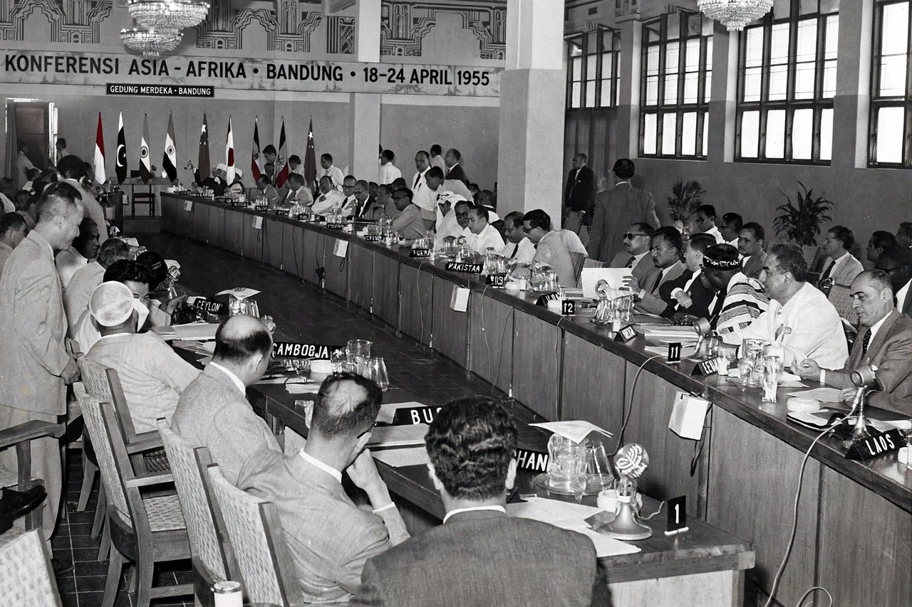

Bandung Conference
The Bandung Conference (Indonesian: Konferensi Asia–Afrika) was a meeting of Asian and African states, most of which were newly independent, which took place on 18–24 April 1955 in Bandung, West Java, Indonesia. Twenty-nine governments of Asian and African nations attended the conference, representing a total population of 1.5 billion people, some 54% of the world's population at the time.
 | |
| Native name | Konferensi Asia–Afrika |
|---|---|
| Date | 18–24 April 1955 |
| Location | Bandung, Indonesia |
| Participants | 29 Asian and African governments |
| Outcome | Declaration on Promotion of World Peace and Cooperation; groundwork for the Non-Aligned Movement |
Background
The conference was organised by Indonesia, Burma (Myanmar), India, Ceylon (Sri Lanka) and Pakistan and coordinated by Ruslan Abdulgani, secretary general of the Indonesian ministry of foreign affairs. It was held against the backdrop of the Cold War, rising decolonisation, and tensions over Taiwan, Israel and the Korean War's aftermath. The sponsors aimed to promote Afro-Asian economic and cultural cooperation and to oppose colonialism and neocolonialism in all its forms.
Participants
Among the prominent attendees were Indonesian president Sukarno, who hosted and opened the meeting; Indian prime minister Jawaharlal Nehru; Chinese premier Zhou Enlai, whose delegation played a major diplomatic role; Egyptian president Gamal Abdel Nasser; and Ghana's future leader Kwame Nkrumah, who attended as an observer-connected figure within the Gold Coast delegation's orbit. Burma's U Nu and Pakistan's Mohammad Ali Bogra were also central figures.
Proceedings and declaration
Zhou Enlai's conciliatory diplomacy — encapsulated in his phrase "seeking common ground while reserving differences" — defused early tensions, including over the wording on communism and colonialism. The conference concluded with a ten-point Declaration on Promotion of World Peace and Cooperation, incorporating the Five Principles of Peaceful Coexistence (Panchsheel): respect for sovereignty and territorial integrity, non-aggression, non-interference in internal affairs, equality and mutual benefit, and peaceful coexistence.
Legacy
Bandung gave institutional expression to the solidarity of the decolonising world — the so-called "Third World" — and is widely regarded as a precursor to the Non-Aligned Movement, formally founded at Belgrade in 1961. The "Spirit of Bandung" remains a touchstone of South–South cooperation; commemorations were held in 2005 and 2015, the latter alongside the Asian-African Summit in Jakarta.
See also
Categories: 1955 in international relations · Conferences in Indonesia · Non-Aligned Movement